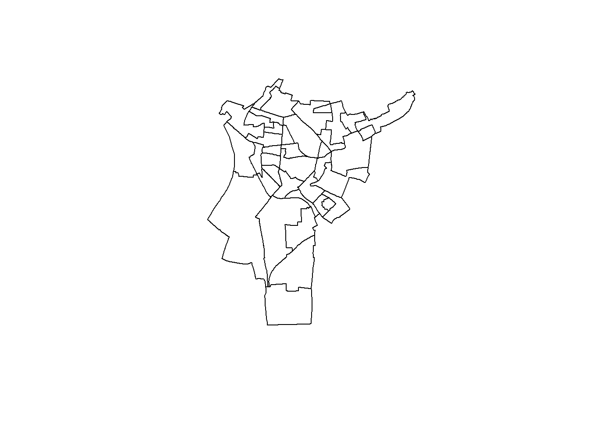

library(sf)iris <- st_read("data/iris.shp")## Reading layer `iris' from data source
## `C:\Users\fchri\OneDrive\Bureau\One Drive de Lylia Christory\OneDrive\Documents\projet-geomatique\data\iris.shp'
## using driver `ESRI Shapefile'
## Simple feature collection with 614 features and 30 fields
## Geometry type: MULTIPOLYGON
## Dimension: XY
## Bounding box: xmin: 2.28833 ymin: 48.80725 xmax: 2.603314 ymax: 49.01233
## Geodetic CRS: WGS 84names(iris)## [1] "Annee" "Code_Offici" "Nom_Officie" "Code_Offici.1" "Nom_Officie.1"
## [6] "Code_Offici.2" "Nom_Officie.2" "Code_Offici.3" "Nom_Officie.3" "Code_Offici.4"
## [11] "Nom_Officie.4" "Code_Offici.5" "Nom_Officie.5" "Code_Offici.6" "Nom_Officie.6"
## [16] "Code_Offici.7" "Nom_Officie.7" "Code_Offici.8" "Nom_Officie.8" "Code_Offici.9"
## [21] "Nom_Officie.9" "Nom_Officie.10" "Nom_Officie.11" "Code_Iso_31" "Type"
## [26] "Code_Grand_" "Libelle_Gra" "Fait_Partie" "Code_Offici.10" "Nom_Officie.12"
## [31] "geometry"iris_sd <- iris[
iris$Nom_Officie.7 == "['Saint-Denis']",
]print(iris_sd)## Simple feature collection with 39 features and 30 fields
## Geometry type: MULTIPOLYGON
## Dimension: XY
## Bounding box: xmin: 2.333246 ymin: 48.90148 xmax: 2.398159 ymax: 48.95211
## Geodetic CRS: WGS 84
## First 10 features:
## Annee Code_Offici Nom_Officie Code_Offici.1 Nom_Officie.1
## 29 2024 ['11'] ['Île-de-France'] ['93'] ['Seine-Saint-Denis']
## 33 2024 ['11'] ['Île-de-France'] ['93'] ['Seine-Saint-Denis']
## 42 2024 ['11'] ['Île-de-France'] ['93'] ['Seine-Saint-Denis']
## 43 2024 ['11'] ['Île-de-France'] ['93'] ['Seine-Saint-Denis']
## 84 2024 ['11'] ['Île-de-France'] ['93'] ['Seine-Saint-Denis']
## 98 2024 ['11'] ['Île-de-France'] ['93'] ['Seine-Saint-Denis']
## 150 2024 ['11'] ['Île-de-France'] ['93'] ['Seine-Saint-Denis']
## 162 2024 ['11'] ['Île-de-France'] ['93'] ['Seine-Saint-Denis']
## 163 2024 ['11'] ['Île-de-France'] ['93'] ['Seine-Saint-Denis']
## 170 2024 ['11'] ['Île-de-France'] ['93'] ['Seine-Saint-Denis']
## Code_Offici.2 Nom_Officie.2 Code_Offici.3 Nom_Officie.3 Code_Offici.4
## 29 ['933'] ['Saint-Denis'] ['1109'] ['Paris'] ['75056']
## 33 ['933'] ['Saint-Denis'] ['1109'] ['Paris'] ['75056']
## 42 ['933'] ['Saint-Denis'] ['1109'] ['Paris'] ['75056']
## 43 ['933'] ['Saint-Denis'] ['1109'] ['Paris'] ['75056']
## 84 ['933'] ['Saint-Denis'] ['1109'] ['Paris'] ['75056']
## 98 ['933'] ['Saint-Denis'] ['1109'] ['Paris'] ['75056']
## 150 ['933'] ['Saint-Denis'] ['1109'] ['Paris'] ['75056']
## 162 ['933'] ['Saint-Denis'] ['1109'] ['Paris'] ['75056']
## 163 ['933'] ['Saint-Denis'] ['1109'] ['Paris'] ['75056']
## 170 ['933'] ['Saint-Denis'] ['1109'] ['Paris'] ['75056']
## Nom_Officie.4 Code_Offici.5 Nom_Officie.5 Code_Offici.6
## 29 ['Paris'] ['200054781'] ['Métropole du Grand Paris'] ['200057867']
## 33 ['Paris'] ['200054781'] ['Métropole du Grand Paris'] ['200057867']
## 42 ['Paris'] ['200054781'] ['Métropole du Grand Paris'] ['200057867']
## 43 ['Paris'] ['200054781'] ['Métropole du Grand Paris'] ['200057867']
## 84 ['Paris'] ['200054781'] ['Métropole du Grand Paris'] ['200057867']
## 98 ['Paris'] ['200054781'] ['Métropole du Grand Paris'] ['200057867']
## 150 ['Paris'] ['200054781'] ['Métropole du Grand Paris'] ['200057867']
## 162 ['Paris'] ['200054781'] ['Métropole du Grand Paris'] ['200057867']
## 163 ['Paris'] ['200054781'] ['Métropole du Grand Paris'] ['200057867']
## 170 ['Paris'] ['200054781'] ['Métropole du Grand Paris'] ['200057867']
## Nom_Officie.6 Code_Offici.7 Nom_Officie.7 Code_Offici.8 Nom_Officie.8
## 29 ['Plaine Commune'] ['93066'] ['Saint-Denis'] ['93066'] ['Saint-Denis']
## 33 ['Plaine Commune'] ['93066'] ['Saint-Denis'] ['93066'] ['Saint-Denis']
## 42 ['Plaine Commune'] ['93066'] ['Saint-Denis'] ['93066'] ['Saint-Denis']
## 43 ['Plaine Commune'] ['93066'] ['Saint-Denis'] ['93066'] ['Saint-Denis']
## 84 ['Plaine Commune'] ['93066'] ['Saint-Denis'] ['93066'] ['Saint-Denis']
## 98 ['Plaine Commune'] ['93066'] ['Saint-Denis'] ['93066'] ['Saint-Denis']
## 150 ['Plaine Commune'] ['93066'] ['Saint-Denis'] ['93066'] ['Saint-Denis']
## 162 ['Plaine Commune'] ['93066'] ['Saint-Denis'] ['93066'] ['Saint-Denis']
## 163 ['Plaine Commune'] ['93066'] ['Saint-Denis'] ['93066'] ['Saint-Denis']
## 170 ['Plaine Commune'] ['93066'] ['Saint-Denis'] ['93066'] ['Saint-Denis']
## Code_Offici.9 Nom_Officie.9
## 29 ['930660503'] ['Mutuelle Champ de Courses 03']
## 33 ['930660403'] ['Courtille Saussaie Floréal 03']
## 42 ['930660904'] ['République Gare Porte de Paris 04']
## 43 ['930660402'] ['Courtille Saussaie Floréal 02']
## 84 ['930660201'] ['Peri Langevin Stalingrad Politzer 01']
## 98 ['930660202'] ['Peri Langevin Stalingrad Politzer 02']
## 150 ['930660705'] ['Franc-Moisin Bel-Air 05']
## 162 ['930660908'] ['République Gare Porte de Paris 08']
## 163 ['930660701'] ['Franc-Moisin Bel-Air 01']
## 170 ['930660907'] ['République Gare Porte de Paris 07']
## Nom_Officie.10 Nom_Officie.11
## 29 MUTUELLE CHAMP DE COURSES 03 mutuelle champ de courses 03
## 33 COURTILLE SAUSSAIE FLORÉAL 03 courtille saussaie floréal 03
## 42 RÉPUBLIQUE GARE PORTE DE PARIS 04 république gare porte de paris 04
## 43 COURTILLE SAUSSAIE FLORÉAL 02 courtille saussaie floréal 02
## 84 PERI LANGEVIN STALINGRAD POLITZER 01 peri langevin stalingrad politzer 01
## 98 PERI LANGEVIN STALINGRAD POLITZER 02 peri langevin stalingrad politzer 02
## 150 FRANC-MOISIN BEL-AIR 05 franc-moisin bel-air 05
## 162 RÉPUBLIQUE GARE PORTE DE PARIS 08 république gare porte de paris 08
## 163 FRANC-MOISIN BEL-AIR 01 franc-moisin bel-air 01
## 170 RÉPUBLIQUE GARE PORTE DE PARIS 07 république gare porte de paris 07
## Code_Iso_31 Type Code_Grand_ Libelle_Gra Fait_Partie
## 29 FXX iris d'habitat 9306605 Mutuelle champ de courses Non
## 33 FXX iris d'habitat 9306604 Courtille Saussaie Floreal Non
## 42 FXX iris d'habitat 9306609 République-Gare-Porte de Paris Non
## 43 FXX iris d'habitat 9306604 Courtille Saussaie Floreal Non
## 84 FXX iris d'habitat 9306602 Péri Langevin Stalingrad Politzer Non
## 98 FXX iris d'habitat 9306602 Péri Langevin Stalingrad Politzer Non
## 150 FXX iris d'habitat 9306607 Franc-Moisin Bel-Air Non
## 162 FXX iris d'habitat 9306609 République-Gare-Porte de Paris Non
## 163 FXX iris d'habitat 9306607 Franc-Moisin Bel-Air Non
## 170 FXX iris d'habitat 9306609 République-Gare-Porte de Paris Non
## Code_Offici.10 Nom_Officie.12 geometry
## 29 <NA> <NA> MULTIPOLYGON (((2.367335 48...
## 33 <NA> <NA> MULTIPOLYGON (((2.38187 48....
## 42 <NA> <NA> MULTIPOLYGON (((2.347363 48...
## 43 <NA> <NA> MULTIPOLYGON (((2.376492 48...
## 84 <NA> <NA> MULTIPOLYGON (((2.356879 48...
## 98 <NA> <NA> MULTIPOLYGON (((2.356333 48...
## 150 <NA> <NA> MULTIPOLYGON (((2.371145 48...
## 162 <NA> <NA> MULTIPOLYGON (((2.353601 48...
## 163 <NA> <NA> MULTIPOLYGON (((2.366096 48...
## 170 <NA> <NA> MULTIPOLYGON (((2.348671 48...plot(st_geometry(iris_sd))
Dans le cadre de notre analyse des inégalités socio-spatiales à Saint Denis, nous avons mobilisé plusieurs types de données :
Contours des IRIS (IGN) :
Il s’agit de données spatiales vectorielles (format shapefile .shp ou GeoPackage .gpkg) fournies par l’IGN. Ces données représentent les limites des IRIS (Îlots Regroupés pour l’Information Statistique), qui sont des unités spatiales infra-communales. Chaque IRIS correspond à une zone d’environ 2 000 habitants, ce qui permet une analyse fine des phénomènes sociaux à l’intérieur d’une commune. Ces contours servent de support cartographique pour représenter les indicateurs socio-économiques.
Base Filosofi (INSEE) :
Il s’agit de données statistiques attributaires (format .csv ou .xlsx) produites par l’INSEE. Ces données permettent de mesurer précisément les inégalités socio-économiques entre les différents quartiers. Cette base fournit des informations détaillées sur les revenus des ménages à l’échelle des IRIS, telles que : - le revenu médian - le taux de pauvreté - l’indice de Gini (inégalités de revenus)
Traitement des données avec RStudio :
Les données ont été traitées à l’aide de R, en utilisant des formats comme shp, csv et xlsx. Cet outil permet ainsi de croiser les données spatiales et statistiques afin de visualiser et analyser les inégalités de revenus dans l’espace.
Le traitement consiste à :